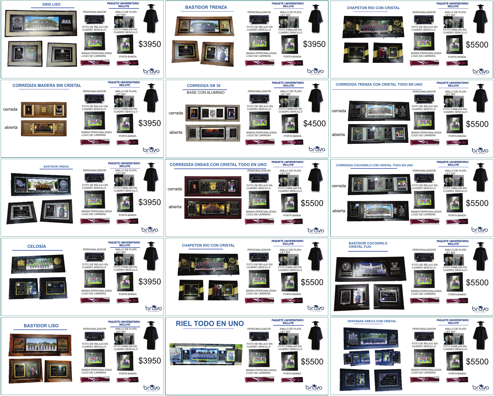
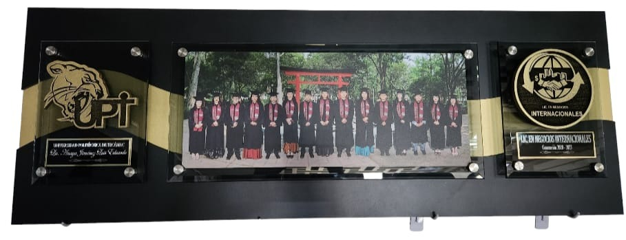
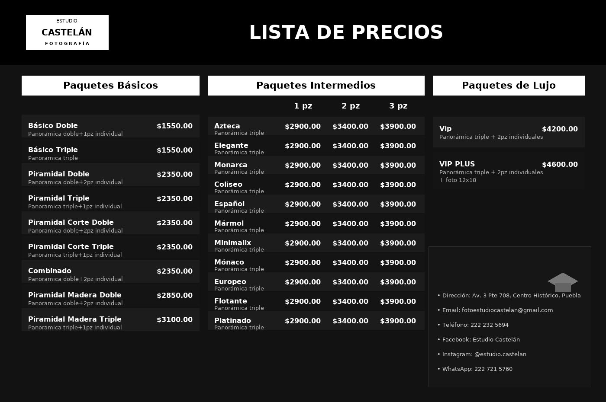
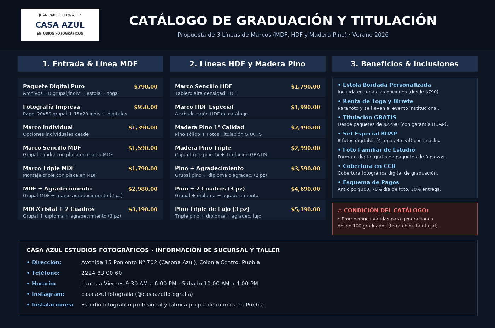

Comparativa Técnica de Proveedores
Análisis objetivo elaborado por el comité organizador: por qué proponemos a Expo Tours Graduaciones frente a las agencias y talleres tradicionales de Puebla.
Fabricante Integral
Taller propio de molduras, parque textil de bordado computarizado y fundición de orfebrería en las mismas instalaciones en Puebla. Al no existir intermediarios ni agencias comisionistas, cada peso invertido se refleja directamente en la calidad física del cuadro.
Montaje al Vacío sobre MDF
Termolaminado térmico al vacío con película protectora mate UV fijada sobre placa rígida de MDF. Este método industrial previene el deterioro por humedad, cambios de temperatura y rayos solares a lo largo de las décadas.
Cubre Marco Real (Cajón 3D)
Estructura de doble moldura con cajón profundo biselado (7 a 9 cm) y filete interior en dorado o plata. Crea un efecto vitrina tridimensional de museo que da jerarquía física al escudo institucional y a la fotografía panorámica.
Comparativa Integral de Proveedores en Puebla
Contraste de especificaciones técnicas, componentes incluidos y estatus real de fabricación.
| Proveedor | Rango Precios | Calidad Madera / Material | ¿Cubre Marco Profundo? | ¿Cristalería / Acabado? | ¿Estola Bordada? | ¿Anillo / Joyería? | Estatus Operativo |
|---|---|---|---|---|---|---|---|
|
Expo Tours Graduaciones
Propuesta Oficial Comité
|
$850 – $4,490
MXN / egresado (Sin forzar joyería)
|
Madera sólida selecta Pino de 1ª estufado / Banak sin deformación |
✓ Sí, desde $2,490 Cajón biselado 7-9 cm con filete oro/plata |
Termolaminado mate UV al vacío Cristal antirreflejo 2 mm en ventana de diploma |
✓ Sí, nominal incluida Bordado computarizado en taller propio |
✓ Fundición en Puebla Incluido en Magno; opcional a precio de fábrica |
Fabricante Integral 100% |
|
Deluxe Graduaciones
Agencia Local (Puebla)
|
$990 – $2,990
MXN (Foto; Joyería NO incluida)
|
Madera comercial estándar Molduras estándar de catálogo |
⚠ Solo paquete alto Marcos planos en gama de entrada |
Cristal flotado tradicional Vidrio estándar pesado sobre la foto |
✓ Sí, personalizada Estola conmemorativa de generación |
✕ NO incluido en foto Venta por separado (+ $1,500 a $3,500) |
Agencia Organizadora Local |
|
Estudio Castelán (Casa Castelán)
Estudio Tradicional (Puebla Centro)
|
$1,550 – $4,600
MXN (Precios 2026 vigentes solo firmando en dic.)
|
Molduras y estilos de catálogo Piramidales ($1,550-$3,100), Intermedios y Lujo |
⚠ Solo en Intermedios y Lujo Desde $2,900 a $4,600; Básicos ($1,550) planos |
Cristal flotado tradicional Enmarcado clásico de estudio con vidrio *Set Relajo digital: tomas directas s/retoques y no editables
|
✓ Sí, personalizada Préstamo de toga para fotos y protocolo |
✕ NO incluido en foto Joyería no incluida en catálogo fotográfico |
Estudio y Enmarcado Local |
|
Casa Azul (Juan Pablo González)
Estudio y Fábrica Local (Puebla)
|
$790 – $5,190
MXN (Digital $790*; Pino $2,490–$5,190; *Promo desde 100 graduados)
*Fotos digitales: tomas directas s/retoque y no editables
|
MDF, HDF y Madera Pino 1ª 3 líneas de marcos; taller propio de carpintería |
✓ Sí, en Pino y Triples Desde $1,790 (MDF triple) y $2,490 (Pino sólido) |
Papel fotográfico protegido Protección agua/polvo y cristal estándar *Set BUAP (8 fotos digital): tomas s/retoques no editables
|
✓ Sí, personalizada Incluida desde $790; toga llevada al evento CCU |
✕ NO incluido en foto Sin joyería; fotos titulación gratis desde $2,490 |
Fábrica de Marcos y Estudio Local |
|
Bravo Graduaciones
Proveedor Foráneo
|
$3,950 – $5,500
MXN / alumno (Venta forzada con anillo)
|
Molduras y grecas foráneas Corredizas, celosías, grecas y rieles |
✓ Sí ($4,500 – $5,500) Sistemas con riel corredizo y cajas 3D |
Cristalería amplia y corrediza ⚠ Alto riesgo de rotura en flete carretero *Fotos relajo digital: tomas directas s/retoque no editables
|
✓ Banda + Porta banda Incluye personalizador de escritorio |
✓ Anillo Plata Ley 925 Obligatorio en todos sus paquetes |
Comercializadora Foránea |
|
Agencia Foránea (Displays Acrílico)
Proveedor Foráneo
|
$3,500 – $5,200
MXN / egresado
|
Tablero Melamina / MDF Base horizontal negra con filete dorado |
✕ No maneja cubre marco Montaje plano sobre tablero con chapetones |
Paneles flotantes de acrílico ⚠ Muy vulnerable a rayaduras; sin sellado |
Ganchos para colgar estola Estola básica en paquete institucional |
Medalla / Moneda grabada Montaje circular en lugar de anillo |
Taller Foráneo de Ensamble |
|
VP Paquetes
|
$950 – $5,800
MXN / egresado
|
Pino / Banak Buenas molduras locales |
✓ Sí, desde $2,200 Doble marco disponible |
Cristal estándar Opción antirreflejo según paquete |
✓ Sí, bordada Estola institucional |
Joyería en plata/oro Disponible con costo adicional |
Carpintería y Orfebrería |
|
Graduaciones Lemus / Olan
|
$800 – $3,200
MXN / egresado
|
Poliestireno / Pino básico Material sintético en paquetes de entrada |
⚠ Solo paquete superior Marcos planos en gama baja y media |
Cristal o mica simple Vidrio flotado tradicional pesado |
✕ Estola lisa estándar Bordado de nombre con sobrecosto extra |
Por catálogo externo Intermediación sin taller propio |
Taller de Ensamble y Maquila |
|
Estudios 2 Poniente / Centro
|
$800 – $3,000
MXN / egresado
|
Pino a medida Ensamble de carpintería local |
✕ No (Marcos tradicionales) Marcos planos o escalonados estándar |
Cristal flotado simple Reflejo estándar, mayor peso de carga |
✕ No incluyen estolas Únicamente renta para la toma fotográfica |
✕ No disponible No manejan orfebrería escolar |
Carpintería Tradicional |
💡 Nota del Comité sobre Cristalería en Panorámicas: En cuadros de gran formato (panorámicas de generación de 80 cm a 1 metro de longitud), el uso de vidrio flotado tradicional añade entre 4 y 6 kg de sobrepeso innecesario, representando un riesgo severo de ruptura o desprendimiento en muros domésticos. El estándar contemporáneo de museografía adoptado por Expo Tours utiliza termolaminado mate UV antirreflejo al vacío sobre madera sólida para la fotografía, blindándola de decoloración y permitiendo limpieza con paño húmedo, mientras que en la ventana reservada para el diploma oficial se monta cristal antirreflejante de 2 mm para la protección del papel moneda institucional.
📋 Actualización de Cotización · Estudio Castelán (Casa Castelán, Centro Histórico): Revisamos la propuesta formal recibida de Estudio Castelán (Av. 3 Pte 708). Si bien cuentan con opciones básicas accesibles ($1,550 a $2,350) y un paquete de titulación con 50% de descuento ($250 MXN con 1 año de vigencia), identificamos condiciones operativas clave: exigen firmar contratos a más tardar en diciembre 2026 para respetar estos costos (ante renovación inminente de catálogo), el personalizador de escritorio grabado solo es regalía en paquetes Intermedios y de Lujo ($2,900 en adelante), el Set de Relajo digital está condicionado a amigos que también adquieran paquete individual, y no incluye la jornada de fiesta ni convivencia (comida/bebida/DJ) en el Día de la Foto.
📋 Actualización de Cotización · Casa Azul (Juan Pablo González, 15 Pte 702): Evaluamos la propuesta y catálogo de 18 páginas de Casa Azul. Ofrecen 3 líneas de materiales (MDF desde $1,590, HDF desde $1,790 y Madera de Pino de 1ª calidad desde $2,490 a $5,190), además de paquete digital puro ($790 MXN) y fotos de titulación gratuitas con garantía BUAP a partir de $2,490. No obstante, el comité identificó tres aspectos críticos: 1) Condición de volumen: su catálogo estipula expresamente que las promociones aplican "para generaciones desde 100 graduados", lo que representa un riesgo de ajuste de precios si el grupo contratante es menor; 2) Materiales sintéticos de entrada: sus opciones más económicas son en MDF/HDF (aglomerados vulnerables a hinchazón con la humedad frente a la madera sólida estufada); y 3) Convivencia: brindan snacks de cortesía durante su cita de 1 hora, pero no incluyen la fiesta masiva con taquiza libre, bebidas ilimitadas, DJ en vivo ni descorche que Expo Tours integra para toda la generación.
Advertencia Técnica sobre "Fotografías Digitales" (Sin retoque y no editables)
En paquetes escolares donde los proveedores ofrecen archivos o fotos "en formato digital" (como sets de relajo con amigos, tomas familiares adicionales o paquetes digitales básicos), es fundamental aclarar que en la práctica comercial estándar se entregan tomas directas de cámara sin retoque fotográfico profesional (sin edición de piel, imperfecciones, luces ni calibración fina) y en formatos cerrados comprimidos no editables (JPG estándar, sin archivos RAW ni capas de edición).
🏛️ Próximo Paso · Sesión Informativa de Generación: Tras la auditoría técnica y de riesgos, Expo Tours Graduaciones representa la opción más coherente, accesible y segura para nuestra generación. Por ello, se invitará a sus representantes a impartir una plática informativa presencial —si la generación está de acuerdo— para resolver dudas de viva voz y contrastar muestras físicas, gestionando el comité el espacio en la facultad en las próximas semanas.
Evidencias, Catálogos y Cotizaciones Oficiales Analizadas
Documentación física, cotizaciones directas e inspección de catálogos y marcos de proveedores locales y externos analizados por el comité de la FIQ:

Bravo Graduaciones · Catálogo Foráneo Universitario
Catálogo con 14 variantes de marcos (Corrediza Madera, Bastidor Trenza, Chapetón Río con Cristal, Riel Todo en Uno, Corrediza Cocodrilo). Todos los paquetes incorporan forzosamente anillo de plata Ley 925, foto de relajo, foto familiar, banda y personalizador de escritorio.

Agencia Foránea · Tablero con Chapetones Flotantes (Caso UPT)
Estructura sobre tablero horizontal de MDF negro con cinta dorada decorativa. La fotografía panorámica se sostiene al centro mediante placas de acrílico sujetas con 4 pernos metálicos (chapetones cromados), con escudo institucional troquelado a la izquierda y medalla conmemorativa a la derecha.

Estudio Castelán · Catálogo y Propuesta 2026
Catálogo oficial recibido para 2026: Básicos ($1,550 a $3,100), Intermedios ($2,900 a $3,900 en 11 modelos de molduras) y Lujo VIP ($4,200 a $4,600). Incluye préstamo de toga (sesión y protocolo), estola personalizada, paquete de titulación al 50% ($250 MXN con 1 año de vigencia) y cobertura fotográfica/video en protocolo, misa y cena-baile.

Casa Azul (Juan Pablo González) · Propuesta Integral BUAP
Catálogo con 3 líneas de marcos (MDF, HDF y Madera Pino 1ª calidad). Incluye estola bordada personalizada desde $790, paquete de fotos de titulación gratis con garantía BUAP a partir de $2,490, foto familiar digital en paquetes de 3 piezas, sesión en set especial BUAP con letras luminosas y cobertura en CCU.
Auditoría de Riesgos y Reseñas Negativas Reincidentes
Para cuidar el patrimonio de las familias de la FIQ, el comité investigó los historiales públicos de quejas, reclamaciones y fricciones operativas registradas en internet para cada empresa evaluada:
Nota Técnica del Comité: Fotografías en Formato Digital (Sin Retoques y No Editables)
Al comparar cotizaciones escolares donde los estudios anuncian fotos "en formato digital" (sets de relajo con amigos, tomas familiares adicionales, fotos en escenografías temáticas o archivos digitales de paquete), es indispensable que la generación tenga en cuenta que en la práctica comercial estándar se entregan tomas directas de cámara: usualmente sin ningún retoque (sin posproducción de piel, ojeras, brillo facial, luces ni corrección de imperfecciones) y en archivos planos no editables (formato JPG comprimido estándar, sin archivos RAW ni capas de edición).
Deluxe Graduaciones
Blvd. 18 Sur, San Manuel (a 3 min de BUAP) · Agencia Comercializadora-
Demoras prolongadas en la entrega (3 a 6 meses): Queja recurrente en agencias organizadoras en Puebla. Al subcontratar el enmarcado y el revelado a talleres externos, los plazos de entrega se desfasan considerablemente después del evento.
-
Comentarios sobre compromisos en juntas informativas: Según testimonios y reviews negativas en redes, se señala cierta presión a comités para firmar contratos de cenas de gala y paquetes completos, contemplando supuestas cláusulas de penalización por baja de alumnos.
-
Costo final acumulado engañoso: Aunque promocionan entrada desde $990 MXN, al no incluir el anillo de graduación ni cuadros familiares, los graduados que buscan joyería terminan desembolsando más de $3,800 a $4,500 MXN en total.
-
Disparidad entre prototipo de muestra y entrega masiva: Testimonios de alumnos que señalan diferencias en la tonalidad y calidad de las molduras recibidas frente a los ejemplares mostrados durante la labor de venta.
Estudio Castelán (Casa Castelán)
Av. 3 Poniente 708, Centro Histórico de Puebla · Estudio Fotográfico-
Presión de firma anticipada (Diciembre 2026): El estudio notificó que renovará catálogo en breve; para congelar y respetar los costos de 2026 condicionan a que la generación firme contratos a más tardar en diciembre de 2026. Para nuestra graduación programada en diciembre 2027, esto presiona a las familias a comprometerse con un año entero de anticipación.
-
Set de Relajo digital condicionado, sin retoque y no editable: La sesión digital de relajo con amigos se limita expresamente a compañeros de la carrera "que hayan realizado compra también". Además, al enviarse en formato digital, se trata de tomas directas de cámara sin retoque fotográfico (sin corrección de imperfecciones, piel ni iluminación) y en archivos JPG cerrados no editables (sin capas ni negativos RAW). A diferencia de la propuesta comunitaria de Expo Tours —donde la convivencia fotográfica es abierta para toda la generación—, este candado divide y excluye a los grupos si alguien no puede costear un cuadro individual.
-
Regalía de escritorio condicionada (Excluye Básicos): La placa personalizada de escritorio con nombre y escudo grabado únicamente se otorga como regalía en paquetes Intermedios ($2,900 a $3,900) y de Lujo ($4,200 a $4,600). Quienes adquieran paquetes Básicos ($1,550 a $3,100) quedan desprovistos de este recuerdo institucional.
-
Cero alimentos, bebidas ni fiesta el Día de la Foto: El servicio se enfoca exclusivamente en la toma fotográfica de estudio/protocolo. No incluye el desayuno, bebidas ilimitadas, taquiza libre, música en vivo con DJ ni descorche que Expo Tours integra sin costo, obligando a los alumnos a costear sus propios alimentos y traslados.
-
Enmarcado tradicional con cristal y joyería excluida: Emplean marcos tradicionales con cristal flotado convencional de estudio (más pesado y propenso a reflejos molestos y roturas que el laminado térmico mate UV al vacío). Además, ningún paquete incluye el anillo de graduación, elevando el gasto global si se desea joya de generación.
-
Inconsistencias en servicio al cliente y quejas en eventos (Google / Redes): En plataformas de opinión y foros de Puebla, usuarios reportan una atención al cliente que llega a sentirse burocrática en sucursal, así como retrasos e inconformidades aisladas en retoques y entrega de material en eventos sociales y escolares.
Casa Azul (Juan Pablo González)
Av. 15 Poniente Nº 702, Centro Histórico de Puebla · Fábrica de Marcos y Estudio-
Cláusula de volumen mínimo ("Desde 100 graduados"): Al pie de cada página de su catálogo oficial señalan expresamente: "*Promociones para generaciones desde 100 graduados". Para secciones o carreras de la FIQ con menor matrícula o grupos independientes, los precios, cortesías y paquetes pueden estar sujetos a recotización o pérdida de beneficios.
-
Gama de entrada en aglomerado sintético (MDF / HDF): Sus opciones económicas de enmarcado ($1,590 a $1,990) se elaboran con tableros de fibra prensada (MDF y HDF), materiales más propensos a absorber humedad y perder rigidez con los años comparados con la madera sólida estufada. La madera maciza de pino de 1ª calidad recién comienza en paquetes de $2,490 en adelante.
-
Fotos de titulación gratis condicionadas a paquetes altos: Aunque promocionan fotografías de trámite de titulación gratuitas con garantía BUAP, este beneficio solo se incluye al contratar opciones desde $2,490 MXN, dejando fuera a los compañeros que eligen paquetes digitales ($790) o marcos básicos de MDF.
-
Entregas digitales sin retoque y no editables (Set BUAP, familiar y digital $790): Las fotografías que Casa Azul ofrece en formato digital (las 8 tomas de la sesión con letras luminosas BUAP, la foto familiar digital en paquetes triples de marcos, o su paquete digital de $790) se entregan como tomas directas de cámara: sin retoque estético de piel, luces ni imperfecciones, y en archivos JPG planos no editables. Solo el retrato formal individual impreso para el marco pasa por revelado y retoque de estudio, mientras que la sesión temática restringe además la participación a alumnos que hayan contratado individualmente.
-
Cero fiesta generacional (Solo snack en cita) y sin anillo: Durante su cita de 1 hora en estudio ofrecen bebidas y snacks de cortesía, pero no cuentan con la jornada completa de convivencia (taquiza libre, desayuno, bebidas ilimitadas, DJ en vivo y descorche) que Expo Tours incluye para toda la generación. Además, no integran orfebrería escolar en sus paquetes.
-
Fricciones logísticas y requisitos imprevistos en ceremonias (Google Reviews): Pese a su buena reputación en trámites individuales, en eventos masivos de graduación registran quejas por retrasos en la llegada de togas y birretes momentos antes del protocolo oficial, cambios de última hora en dinámicas de entrega y retención imprevista de identificaciones o depósitos de garantía para la vestimenta.
Bravo Graduaciones
Sede: Edomex (Tecámac, Neza, Toluca, Qro) · Intermediación Nacional-
Costo de entrada excluyente por "Venta Atada": Su paquete más económico arranca en $3,950 MXN. Obligan a todos los egresados a adquirir el anillo de plata y 3 cuadros, sin opción económica para compañeros con presupuesto limitado.
-
Alto índice de cristales rotos en traslados carreteros: En modelos complejos como "Chapetón Río", "Riel Todo en Uno" y "Corredizas", el transporte foráneo por paquetería o flete desde el Edomex produce fisuras y desajustes mecánicos frecuentes.
-
Garantías y reposición a distancia prácticamente inviables: Al no tener taller en Puebla, cualquier placa con error ortográfico en el nombre o moldura dañada exige reenvíos foráneos que tardan meses o quedan sin respuesta tras liquidar pagos.
-
Complejidad logística y multas con togas rentadas: La entrega y retorno de las togas y birretes rentados desde otro estado suele generar cobros de flete extra y disputas por depósitos retenidos ante retrasos de paquetería.
-
Fotos de relajo y adicionales digitales sin retoque ni editables: Las tomas grupales de relajo entregadas en archivo digital son capturas directas sin posproducción estética ni retoque de imperfecciones, enviadas en formatos comprimidos cerrados no editables.
Agencias Foráneas (Displays)
Zona Metropolitana / Edomex · Modelo UPT Tecámac-
Rayaduras prematuras e irreversibles en el acrílico: Las láminas plásticas transparentes se rayan con extrema facilidad durante el embalaje, el traslado carretero o la limpieza con telas domésticas comunes, perdiendo nitidez rápidamente.
-
Falta de sellado hermético (infiltración de polvo y humedad): Al no tener planchado al vacío sobre madera, el espacio libre entre el acrílico y la fotografía permite la acumulación de polvo ambiental, decoloración y hongos con los años.
-
Roscas barridas y pernos flojos por sobrepeso del MDF: La vibración en viajes de carretera afloja los chapetones metálicos, provocando que los paneles de acrílico se muevan, se desalineen o se fisuren en las perforaciones de las esquinas.
-
Ausencia total de taller físico en Puebla: Cero posibilidad de acudir a una sucursal local para solicitar el cambio de una placa rayada o un chapetón defectuoso sin incurrir en costos de envío foráneo.
Expo Tours Graduaciones
Taller Matriz en Puebla · Fabricante Integral en Madera, Textil y Orfebrería-
Taller propio y fundición en Puebla (Cero intermediarios): Al ser fabricantes directos, cualquier reposición por detalle en el nombre o ajuste de moldura se soluciona localmente en 48 a 72 horas sin excusas de paquetería foránea.
-
Democracia de elección real (Presupuesto libre): Paquetes desde $850 MXN (básico sin forzar gasto) hasta $4,490 MXN (Magno con anillo). Ningún egresado es obligado a pagar por joyería que no desee.
-
Tecnología de museografía al vacío (Sin cristales frágiles): Termolaminado mate UV antirreflejo sellado al vacío sobre madera sólida. Cuadros livianos, inmunes a la humedad, lavables con paño húmedo y con cristal antirreflejante de 2 mm únicamente en el diploma.
-
Celebración completa del Día de la Foto incluida: Desayuno ligero, bebidas (agua, hielo, refrescos, agua mineral), taquiza libre, DJ en vivo y descorche libre el día de la toma fotográfica para toda la generación, sin cobros adicionales ni sorpresas.
-
Auditoría en Google Reviews (Cero quejas de entrega · Calidad sobresaliente): Al auditar su historial público en Google, se constata que no tienen una sola queja por fallas de entrega ni por no haber entregado los cuadros. De forma consistente, lo que más resalta y reconocen las familias y egresados en sus reseñas es la altísima calidad artesanal de la madera, la nitidez y elegancia del terminado al vacío, y el cumplimiento puntual.
-
Únicos puntos a considerar observados en Google Reviews: Las únicas inconformidades registradas sobre Expo Tours corresponden a que el cobro de pagos parciales se solicita preferentemente en efectivo y comentarios sobre la percepción de demasiada seguridad en la zona de su taller/oficina (filtros estrictos, accesos cerrados y protocolos de vigilancia preventiva al acudir en persona a abonar o conocer las instalaciones). Cabe señalar que ambos puntos obedecen a las indicaciones y políticas operativas establecidas directamente por la empresa para el control de sus contratos individuales y resguardo de sus instalaciones.